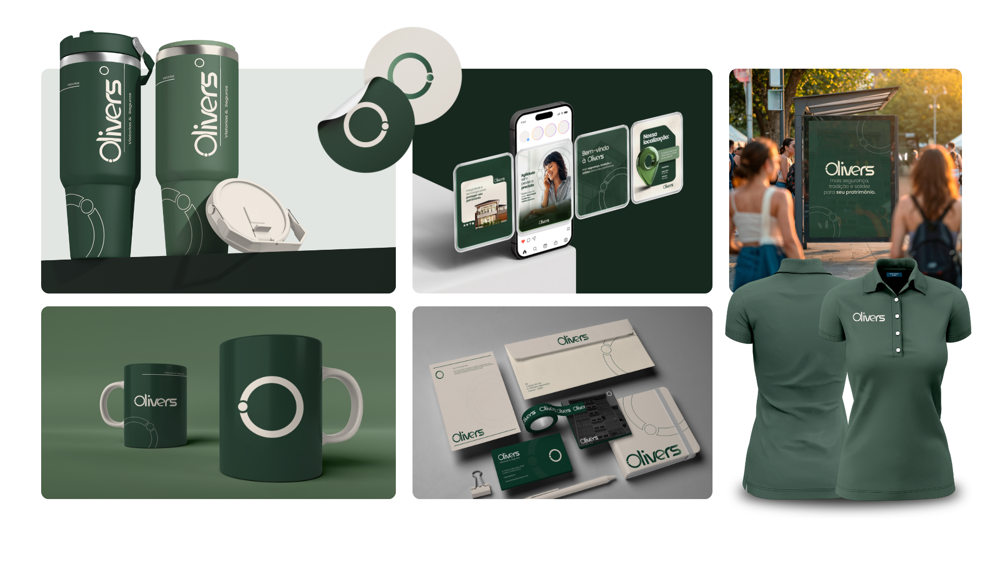
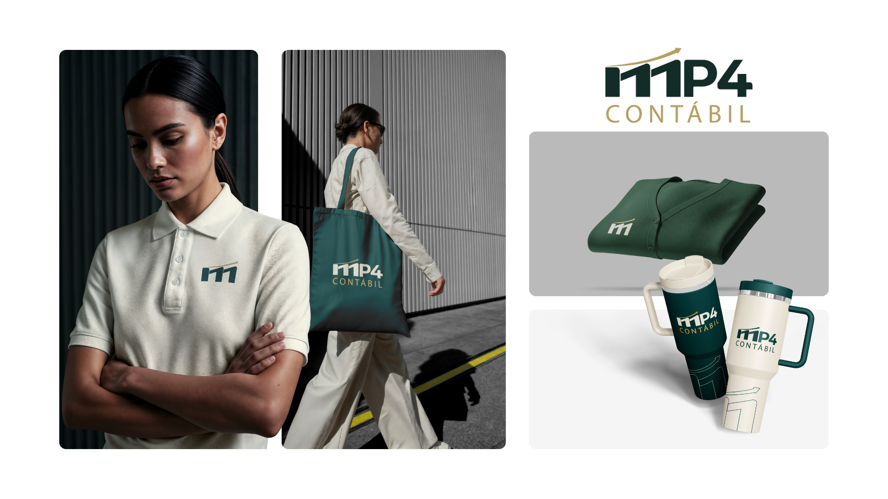
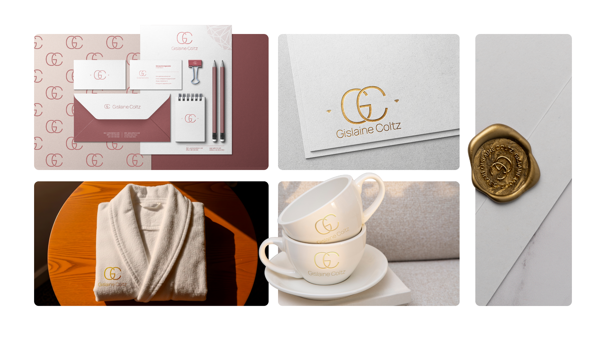
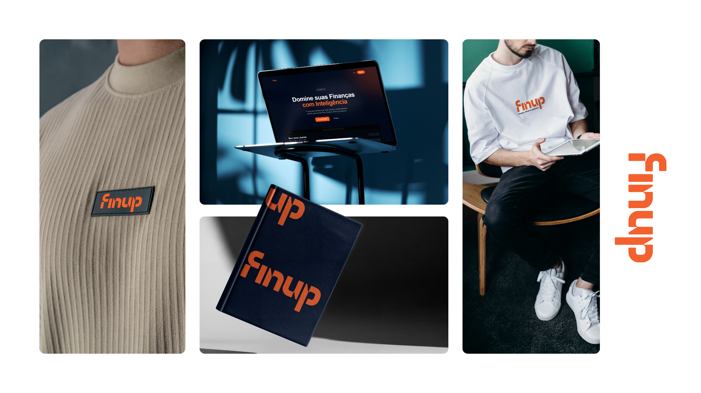
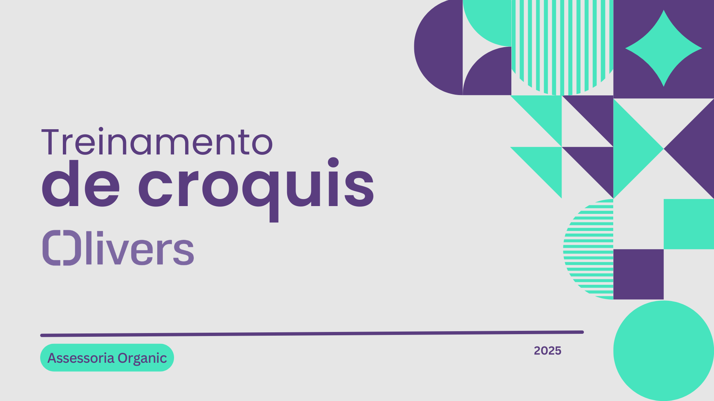
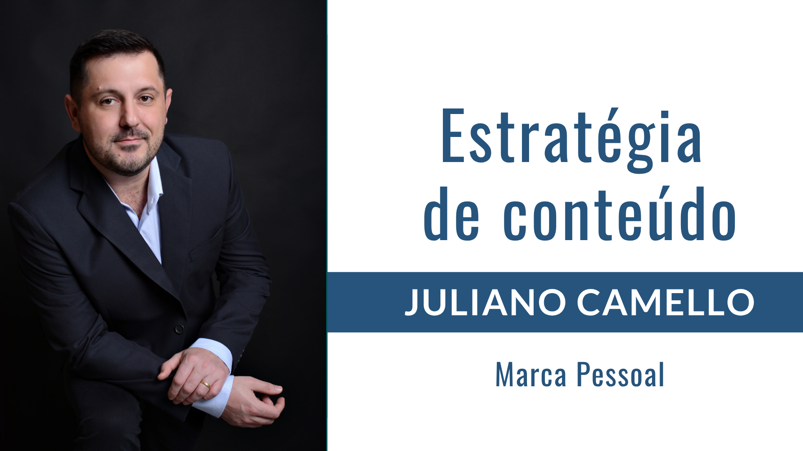

Portfolio
Projetos que
falam por si
Cada marca construída com intenção, estratégia e identidade única.

Evolução do posicionamento para refletir tecnologia, inovação e autoridade no setor de vistorias. Identidade completa com aplicações premium.

Transformação de um nome regional limitado em uma marca escalável — mantendo a essência e história da empresa, ampliando o alcance.

Branding pessoal sofisticado com identidade rose gold e aplicações de alto padrão. Elegância e exclusividade em cada detalhe.

Identidade tech dark com laranja vibrante para uma fintech que vai além do financeiro. Marca construída para escalar no mercado de IA.

Projeto completo: identidade visual com manual de marca, paleta e tipografia. Estratégia de conteúdo com personas mapeadas, 4 pilares editoriais, análise SWOT e plano digital para Instagram, LinkedIn, YouTube e Blog.

Transformacao de processos caóticos em sistema padronizado. Treinamento gravado unico para todos os colaboradores — economia de horas e consistencia operacional.

Posicionamento de marca pessoal completo: do contador ao especialista reconhecido. Estrategia editorial com 6 linhas, 3 personas e presenca em 4 canais digitais.